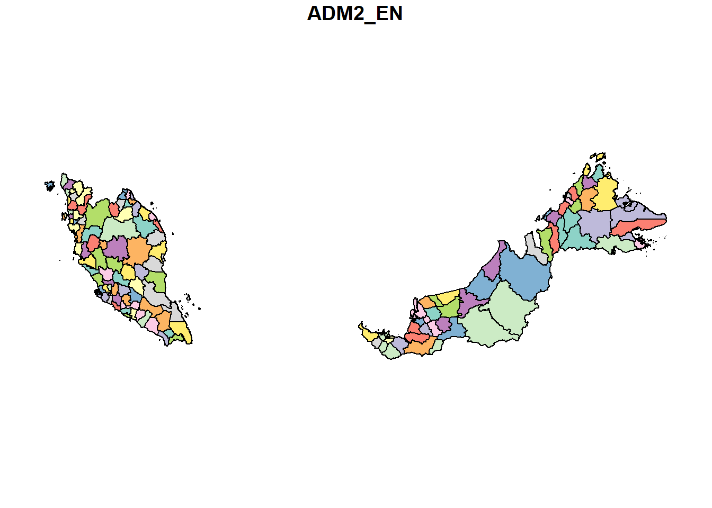
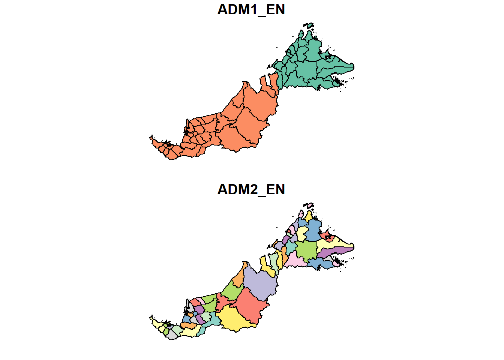

pacman::p_load(sf, tmap, tidyverse, spdep, sfdep, dplyr, tidyr)Take-Home Exercise 3: Prototyping Modules for Geospatial Analytics Shiny Application
1.0 Overview
1.1 Objectives
To evaluate and determine the necessary R packages needed for your Shiny application are supported in R CRAN,
To prepare and test the specific R codes can be run and returned the correct output as expected,
To determine the parameters and outputs that will be exposed on the Shiny applications, and
To select the appropriate Shiny UI components for exposing the parameters determine above.
1.2 Focus
The focus within this Take-Home Exercise, as part of the group project, would be our geographical and aspatial target on:
districts within East Malaysia (Sabah, Sarawak, W.P Labuan)
category: assault
type: rape
We will be discovering the rape trends that take place within the districts of East Malaysia, across the years 2020-2023, discovering the emerging hot spots and cold spots, outliers, as well as determine the spatial autocorrelation within these districts.
1.3 Prototyping for Shiny Application
2.0 Load packages
sf
tmap
tidyverse
spdep
sfdep
dplyr
tidyr
3.0 Importing Data and Data Wrangling
3.1 Raw Data
- geospatial
msia_adm2 <- st_read(dsn = 'data/geospatial/', layer = 'mys_admbnda_adm2_unhcr_20210211')Reading layer `mys_admbnda_adm2_unhcr_20210211' from data source
`C:\marcus159260\IS415-GAA\take-home_exercises\take-home_ex03\data\geospatial'
using driver `ESRI Shapefile'
Simple feature collection with 144 features and 14 fields
Geometry type: MULTIPOLYGON
Dimension: XY
Bounding box: xmin: 99.64072 ymin: 0.855001 xmax: 119.2697 ymax: 7.380556
Geodetic CRS: WGS 84# msia_adm2_shp <- st_read(dsn = 'data/geospatial/mys_admbnda_adm1_unhcr_20210211.shp')- aspatial
msia_sf <- read_csv('data/aspatial/crime_district.csv')Rows: 19152 Columns: 6
── Column specification ────────────────────────────────────────────────────────
Delimiter: ","
chr (4): state, district, category, type
dbl (1): crimes
date (1): date
ℹ Use `spec()` to retrieve the full column specification for this data.
ℹ Specify the column types or set `show_col_types = FALSE` to quiet this message.3.2 Geospatial Wrangling
plot(msia_adm2["ADM2_EN"])
Upon plotting out the shapefile of Admin level 2, we can see that it takes both East and West Malaysia. However, we only want East Malaysia (Sabah, Sarawak).
unique(msia_adm2$ADM1_EN) [1] "Johor" "Kedah" "Kelantan"
[4] "W.P. Kuala Lumpur" "W.P. Labuan" "Melaka"
[7] "Negeri Sembilan" "Pahang" "Perak"
[10] "Perlis" "Pulau Pinang" "Sabah"
[13] "Sarawak" "Terengganu" "W.P. Putrajaya"
[16] "Selangor" We will convert all to lowercase and do necessary trimming for appropriate left-join later to combine with our working data.
msia_adm2 <- msia_adm2 %>%
mutate(ADM1_EN = str_to_lower(ADM1_EN),
ADM1_EN = str_trim(ADM1_EN)) %>%
mutate(ADM2_EN = str_to_lower(ADM2_EN),
ADM2_EN = str_trim(ADM2_EN)) Now, we separate East Malaysia, only filtering “sabah”, “sarawak”, “w.p. labuan” regions. We will select only the necessary columns: ADM1_EN, ADM2_EN, geometry.
msia_adm2_east <- msia_adm2 %>%
filter(ADM1_EN %in% c("sabah", "sarawak", "w.p. labuan")) %>%
select("ADM1_EN", "ADM2_EN", "geometry")
msia_adm2_eastSimple feature collection with 57 features and 2 fields
Geometry type: MULTIPOLYGON
Dimension: XY
Bounding box: xmin: 109.5379 ymin: 0.855001 xmax: 119.2697 ymax: 7.380556
Geodetic CRS: WGS 84
First 10 features:
ADM1_EN ADM2_EN geometry
1 w.p. labuan w.p. labuan MULTIPOLYGON (((115.2528 5....
2 sabah beaufort MULTIPOLYGON (((115.58 5.21...
3 sabah beluran MULTIPOLYGON (((117.7142 6....
4 sabah keningau MULTIPOLYGON (((116.0938 4....
5 sabah kinabatangan MULTIPOLYGON (((119.2474 5....
6 sabah kota belud MULTIPOLYGON (((116.61 6.66...
7 sabah kota kinabalu MULTIPOLYGON (((116.3009 5....
8 sabah kota marudu MULTIPOLYGON (((116.3408 6....
9 sabah kuala penyu MULTIPOLYGON (((115.3682 5....
10 sabah kudat MULTIPOLYGON (((116.6292 6....Now, when we plot back, we can see that only East Malaysia polygon shapes are filtered.
plot(msia_adm2_east)
3 states, 57 districts
unique(msia_adm2_east$ADM1_EN)[1] "w.p. labuan" "sabah" "sarawak" unique(msia_adm2_east$ADM2_EN) [1] "w.p. labuan" "beaufort" "beluran" "keningau"
[5] "kinabatangan" "kota belud" "kota kinabalu" "kota marudu"
[9] "kuala penyu" "kudat" "kunak" "lahad datu"
[13] "nabawan" "papar" "penampang" "pitas"
[17] "putatan" "ranau" "sandakan" "semporna"
[21] "sipitang" "tambunan" "tawau" "tenom"
[25] "tongod" "tuaran" "asajaya" "bau"
[29] "belaga" "betong" "bintulu" "dalat"
[33] "daro" "julau" "kanowit" "kapit"
[37] "kuching" "lawas" "limbang" "lubok antu"
[41] "lundu" "marudi" "matu" "meradong"
[45] "miri" "mukah" "pakan" "samarahan"
[49] "saratok" "sarikei" "selangau" "serian"
[53] "sibu" "simunjan" "song" "sri aman"
[57] "tatau" 3.3 Aspatial Wrangling
- Likewise, we do filtering and wrangling on the state and district, category: assault and type: rape.
First, we see the columns and rows available in sf using glimpse.
glimpse(msia_sf)Rows: 19,152
Columns: 6
$ state <chr> "Malaysia", "Malaysia", "Malaysia", "Malaysia", "Malaysia", "…
$ district <chr> "All", "All", "All", "All", "All", "All", "All", "All", "All"…
$ category <chr> "assault", "assault", "assault", "assault", "assault", "assau…
$ type <chr> "all", "all", "all", "all", "all", "all", "all", "all", "caus…
$ date <date> 2016-01-01, 2017-01-01, 2018-01-01, 2019-01-01, 2020-01-01, …
$ crimes <dbl> 22327, 21366, 16902, 16489, 13279, 11495, 10348, 10453, 5531,…msia_sf <- msia_sf %>%
mutate(state = str_to_lower(state),
state = str_trim(state)) %>%
mutate(district = str_to_lower(district),
district = str_trim(district)) Now, we separate East Malaysia, only filtering “sabah” and “sarawak” regions. We will select only the necessary columns: ADM1_EN, ADM2_EN, geometry.
msia_sf_east <- msia_sf %>%
filter(state %in% c("sabah", "sarawak"),
category == "assault",
type == "rape")
msia_sf_east# A tibble: 400 × 6
state district category type date crimes
<chr> <chr> <chr> <chr> <date> <dbl>
1 sabah all assault rape 2016-01-01 193
2 sabah all assault rape 2017-01-01 211
3 sabah all assault rape 2018-01-01 178
4 sabah all assault rape 2019-01-01 219
5 sabah all assault rape 2020-01-01 153
6 sabah all assault rape 2021-01-01 140
7 sabah all assault rape 2022-01-01 197
8 sabah all assault rape 2023-01-01 225
9 sabah beaufort assault rape 2016-01-01 11
10 sabah beaufort assault rape 2017-01-01 14
# ℹ 390 more rowsWe see that we do not need the “all” results for districts and we need to do a sorting by their date of occurrence in ascending order.
msia_sf_east <- msia_sf_east %>%
filter(year(ymd(date)) >= 2020 & year(ymd(date)) <= 2023) %>%
filter(district != "all") %>%
arrange(date) Dealing with Inconsistencies and mispelled districts
“kota kinabatangan” in
msia_sf_east$districtshould be “kinabatangan” as inmsia_adm2_east$ADM2_EN.- rename “kota kinbatangan” to “kinabatangan” in
msia_sf_east$district
- rename “kota kinbatangan” to “kinabatangan” in
“matu daro” in
msia_sf_east$districtmight represent two separate districts: “matu” and “daro” inmsia_adm2_east$ADM2_EN.- will split first half of the (matu daro) rows take matu, second half take daro, impute with the average of the crimes of matu daro rows in
msia_sf_east$district
- will split first half of the (matu daro) rows take matu, second half take daro, impute with the average of the crimes of matu daro rows in
“padawan” in
msia_sf_east$districtdoes not appear inmsia_adm2_east$ADM2_EN, as Padawan is often categorized within “kuching” but may need verification as a separate district.- follow shapefile, so we rename “padawan” in
msia_sf_east$districtto”kuching”
- follow shapefile, so we rename “padawan” in
“w.p. labuan” appears in
msia_sf_east$districtbut is not listed inmsia_adm2_east$ADM2_EN, which could be due to handling federal territories separately.- Update “w.p. labuan” as a separate state and district in
msia_sf_east$district
- Update “w.p. labuan” as a separate state and district in
“kota samarahan” in
msia_sf_east$districtshould be “samarahan” as inmsia_adm2_east$ADM2_EN.- rename “kota samarahan” to “samarahan” in
msia_sf_east$district
- rename “kota samarahan” to “samarahan” in
msia_sf_east_dealt <- msia_sf_east %>%
mutate(district = gsub("^kota kinabatangan$", "kinabatangan", district), # Rename "kota kinbatangan" to "kinabatangan"
district = gsub("^padawan$", "kuching", district),
district = gsub("^kota samarahan$", "samarahan", district)) %>% #rename "padawan" to "kuching"
# Update "w.p. labuan" as a separate state and district
mutate(
state = if_else(state == "sabah" & district == "w.p. labuan", "w.p. labuan", state),
district = if_else(state == "w.p. labuan" & district == "w.p. labuan", "w.p. labuan", district)
)- impute average for matu daro, and split matu and daro
split_matu_daro <- function(data) {
# Filter rows for "matu daro"
matu_daro_data <- data %>%
filter(district == "matu daro")
print(matu_daro_data)
# Calculate the average crimes for "matu" and "daro" from all entries
total_crimes <- sum(matu_daro_data$crimes) # Total crimes
num_entries <- nrow(matu_daro_data) # Number of entries
# Average for both "matu" and "daro"
average_crime <- round(total_crimes / num_entries) # Round to nearest whole number
print(average_crime)
# Calculate midpoint for splitting the data
midpoint <- ceiling(num_entries / 2) # Use ceiling to handle odd numbers
# Create new entries for "matu" and "daro"
new_entries <- bind_rows(
mutate(matu_daro_data[1:midpoint, ], district = "matu", crimes = average_crime), # First half for "matu"
mutate(matu_daro_data[(midpoint + 1):num_entries, ], district = "daro", crimes = average_crime) # Second half for "daro"
)
# Print new entries for debugging
print(new_entries)
return(new_entries)
}
matu_daro_split <- split_matu_daro(msia_sf_east_dealt)# A tibble: 4 × 6
state district category type date crimes
<chr> <chr> <chr> <chr> <date> <dbl>
1 sarawak matu daro assault rape 2020-01-01 1
2 sarawak matu daro assault rape 2021-01-01 1
3 sarawak matu daro assault rape 2022-01-01 2
4 sarawak matu daro assault rape 2023-01-01 0
[1] 1
# A tibble: 4 × 6
state district category type date crimes
<chr> <chr> <chr> <chr> <date> <dbl>
1 sarawak matu assault rape 2020-01-01 1
2 sarawak matu assault rape 2021-01-01 1
3 sarawak daro assault rape 2022-01-01 1
4 sarawak daro assault rape 2023-01-01 1# Combine the new entries with the existing data, removing old "matu daro" entries
msia_sf_east_final <- msia_sf_east_dealt %>%
filter(district != "matu daro") %>%
bind_rows(matu_daro_split)3 states, 48 districts
unique(msia_sf_east_final$state)[1] "sabah" "w.p. labuan" "sarawak" unique(msia_sf_east_final$district) [1] "beaufort" "beluran" "keningau" "kota belud"
[5] "kota kinabalu" "kinabatangan" "kota marudu" "kudat"
[9] "kunak" "lahad datu" "papar" "penampang"
[13] "ranau" "sandakan" "semporna" "sipitang"
[17] "tawau" "tenom" "tuaran" "w.p. labuan"
[21] "bau" "belaga" "betong" "bintulu"
[25] "dalat" "julau" "kanowit" "kapit"
[29] "samarahan" "kuching" "lawas" "limbang"
[33] "lubok antu" "lundu" "marudi" "meradong"
[37] "miri" "mukah" "saratok" "sarikei"
[41] "serian" "sibu" "simunjan" "song"
[45] "sri aman" "tatau" "matu" "daro" 3.4 Combine Data
msia_left_join <- msia_adm2_east %>%
left_join(msia_sf_east_final, by = c("ADM1_EN" = "state", "ADM2_EN" = "district"))missing_values <- msia_left_join %>%
filter(is.na(crimes)) # Replace 'crimes' with the relevant column(s) you want to check
print(missing_values)Simple feature collection with 9 features and 6 fields
Geometry type: MULTIPOLYGON
Dimension: XY
Bounding box: xmin: 110.4736 ymin: 1.519756 xmax: 117.5625 ymax: 7.013332
Geodetic CRS: WGS 84
ADM1_EN ADM2_EN category type date crimes geometry
1 sabah kuala penyu <NA> <NA> <NA> NA MULTIPOLYGON (((115.3682 5....
2 sabah nabawan <NA> <NA> <NA> NA MULTIPOLYGON (((115.8903 4....
3 sabah pitas <NA> <NA> <NA> NA MULTIPOLYGON (((116.9781 6....
4 sabah putatan <NA> <NA> <NA> NA MULTIPOLYGON (((116.0662 5....
5 sabah tambunan <NA> <NA> <NA> NA MULTIPOLYGON (((116.552 5.5...
6 sabah tongod <NA> <NA> <NA> NA MULTIPOLYGON (((117.5155 4....
7 sarawak asajaya <NA> <NA> <NA> NA MULTIPOLYGON (((110.664 1.5...
8 sarawak pakan <NA> <NA> <NA> NA MULTIPOLYGON (((111.7907 1....
9 sarawak selangau <NA> <NA> <NA> NA MULTIPOLYGON (((112.6285 2....After left-joining, we see that these are the columns that are not present in our working data but are present in our boundary data, we thus have no choice but to drop them.
msia_left_join <- msia_left_join %>%
filter(!is.na(crimes)) %>%
arrange(date) %>%
select(1:2, 5:7) 3.5 Pivot longer to reduce number of rows
msia_left_join_pivot <- msia_left_join %>%
# Ensure 'date' is of Date type, if not already
mutate(date = as.Date(date)) %>%
# Extract year from the date
mutate(year = year(date)) %>%
# Group by the necessary columns and summarize
group_by(ADM1_EN, ADM2_EN, geometry, year) %>%
# Summarize the crimes for each group, summing them up
summarise(crimes = sum(crimes, na.rm = TRUE), .groups = "drop") %>%
# Pivot wider to create crime columns for each year
pivot_wider(
names_from = year,
values_from = crimes,
names_prefix = "crimes_",
values_fill = list(crimes = NULL) # Fill NA values with NULL
)
# View the resulting dataset
print(msia_left_join_pivot)Simple feature collection with 48 features and 6 fields
Geometry type: MULTIPOLYGON
Dimension: XY
Bounding box: xmin: 109.5379 ymin: 0.855001 xmax: 119.2697 ymax: 7.380556
Geodetic CRS: WGS 84
# A tibble: 48 × 7
ADM1_EN ADM2_EN geometry crimes_2020 crimes_2021 crimes_2022
<chr> <chr> <MULTIPOLYGON [°]> <dbl> <dbl> <dbl>
1 sabah beaufo… (((115.58 5.213697, 115.… 4 7 7
2 sabah beluran (((117.7142 6.260833, 11… 8 6 16
3 sabah kening… (((116.0938 4.861981, 11… 6 8 14
4 sabah kinaba… (((119.2474 5.26962, 118… 5 4 5
5 sabah kota b… (((116.61 6.666111, 116.… 7 6 6
6 sabah kota k… (((116.3009 5.85547, 116… 22 15 31
7 sabah kota m… (((116.3408 6.401667, 11… 9 5 9
8 sabah kudat (((116.6292 6.688926, 11… 2 6 8
9 sabah kunak (((118.1334 4.862195, 11… 3 1 1
10 sabah lahad … (((117.746 4.758972, 117… 7 11 10
# ℹ 38 more rows
# ℹ 1 more variable: crimes_2023 <dbl>msia_left_join %>%
mutate(date = as.Date(date)) %>%
mutate(year = year(date)) %>%
group_by(ADM1_EN, ADM2_EN, geometry, year) %>%
summarise(n = n(), .groups = "drop") %>%
filter(n > 1) # This will show any groups with duplicatesSimple feature collection with 4 features and 4 fields
Geometry type: MULTIPOLYGON
Dimension: XY
Bounding box: xmin: 110.1278 ymin: 1.05063 xmax: 110.5339 ymax: 1.80667
Geodetic CRS: WGS 84
# A tibble: 4 × 5
ADM1_EN ADM2_EN geometry year n
* <chr> <chr> <MULTIPOLYGON [°]> <dbl> <int>
1 sarawak kuching (((110.1389 1.684166, 110.1389 1.685, 110.1391 1.… 2020 2
2 sarawak kuching (((110.1389 1.684166, 110.1389 1.685, 110.1391 1.… 2021 2
3 sarawak kuching (((110.1389 1.684166, 110.1389 1.685, 110.1391 1.… 2022 2
4 sarawak kuching (((110.1389 1.684166, 110.1389 1.685, 110.1391 1.… 2023 23.6 Projection Transformation
Acquiring the code from https://epsg.io/32649,
- We will transform the it to East Malaysias’s projected coordinate system (UTM Zone 49N) with the EPSG code: 32649
st_crs(msia_left_join_pivot)Coordinate Reference System:
User input: WGS 84
wkt:
GEOGCRS["WGS 84",
DATUM["World Geodetic System 1984",
ELLIPSOID["WGS 84",6378137,298.257223563,
LENGTHUNIT["metre",1]]],
PRIMEM["Greenwich",0,
ANGLEUNIT["degree",0.0174532925199433]],
CS[ellipsoidal,2],
AXIS["latitude",north,
ORDER[1],
ANGLEUNIT["degree",0.0174532925199433]],
AXIS["longitude",east,
ORDER[2],
ANGLEUNIT["degree",0.0174532925199433]],
ID["EPSG",4326]]msia <- msia_left_join_pivot %>%
st_transform(crs=32649)st_crs(msia)Coordinate Reference System:
User input: EPSG:32649
wkt:
PROJCRS["WGS 84 / UTM zone 49N",
BASEGEOGCRS["WGS 84",
ENSEMBLE["World Geodetic System 1984 ensemble",
MEMBER["World Geodetic System 1984 (Transit)"],
MEMBER["World Geodetic System 1984 (G730)"],
MEMBER["World Geodetic System 1984 (G873)"],
MEMBER["World Geodetic System 1984 (G1150)"],
MEMBER["World Geodetic System 1984 (G1674)"],
MEMBER["World Geodetic System 1984 (G1762)"],
MEMBER["World Geodetic System 1984 (G2139)"],
ELLIPSOID["WGS 84",6378137,298.257223563,
LENGTHUNIT["metre",1]],
ENSEMBLEACCURACY[2.0]],
PRIMEM["Greenwich",0,
ANGLEUNIT["degree",0.0174532925199433]],
ID["EPSG",4326]],
CONVERSION["UTM zone 49N",
METHOD["Transverse Mercator",
ID["EPSG",9807]],
PARAMETER["Latitude of natural origin",0,
ANGLEUNIT["degree",0.0174532925199433],
ID["EPSG",8801]],
PARAMETER["Longitude of natural origin",111,
ANGLEUNIT["degree",0.0174532925199433],
ID["EPSG",8802]],
PARAMETER["Scale factor at natural origin",0.9996,
SCALEUNIT["unity",1],
ID["EPSG",8805]],
PARAMETER["False easting",500000,
LENGTHUNIT["metre",1],
ID["EPSG",8806]],
PARAMETER["False northing",0,
LENGTHUNIT["metre",1],
ID["EPSG",8807]]],
CS[Cartesian,2],
AXIS["(E)",east,
ORDER[1],
LENGTHUNIT["metre",1]],
AXIS["(N)",north,
ORDER[2],
LENGTHUNIT["metre",1]],
USAGE[
SCOPE["Navigation and medium accuracy spatial referencing."],
AREA["Between 108°E and 114°E, northern hemisphere between equator and 84°N, onshore and offshore. China. Hong Kong. Indonesia. Macao. Malaysia - East Malaysia - Sarawak. Mongolia. Russian Federation. Vietnam."],
BBOX[0,108,84,114]],
ID["EPSG",32649]]3.7 Visualisation
3.8 Write/Read rds
write_rds(msia, "data/rds/msia.rds")msia <- read_rds("data/rds/msia.rds")